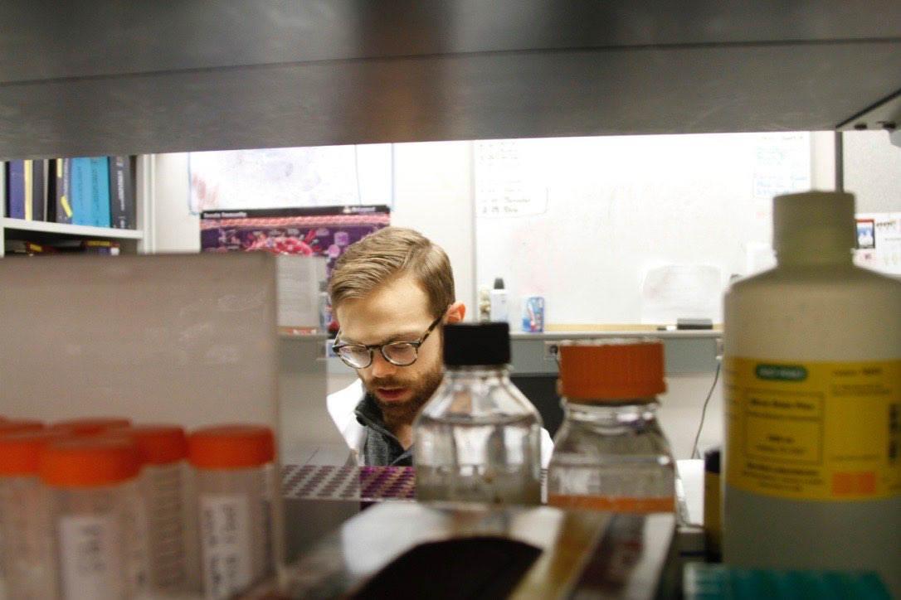

Is scientific research valuable and worth funding if it doesn’t directly impact human health? This question has been vaulted to the forefront of American discourse on science and its support by taxpayer money. I must be honest: as a basic science researcher (we’ll get to what this means in a minute), I’m frustrated by the premise of this question. The answer is so obvious to me: a resounding “YES!”, and my reasoning is both philosophical and practical. I believe – though I recognize and respect opposition to this belief – that there is intrinsic value in knowledge. However, I also know that funding research simply intended to understand more about the natural world has profoundly shaped how we treat and cure disease. As I write this, I feel responsible for acknowledging a personal blind spot while conveying an overlooked and yet critically important sentiment: we, as scientists, have not done a very good job of communicating the importance of our scientific inquisition to you, the public. So, while I am frustrated by the ongoing valuation of my intellectual passions and life’s work as a scientist, I recognize that you deserve to know why what I do is valuable, how it improves your life, and why it’s worthy of taxpayer support.
In this discussion, I want to drive home a very important point: throughout history, scientific curiosity and inquisition – even when not intended to directly impact human health – has created the foundation of knowledge needed to make medical breakthroughs possible today. You might be surprised (and fascinated) to find out that seemingly tangential discoveries made in organisms such as worms, flies, and fungi have fundamentally improved our understanding of human biology and what goes awry during disease. Importantly, at the time of discovery, the value of this research was unknowable, but with time its application has become invaluable. Therefore, funding basic science research does not simply support our curiosity as scientists, but it is also an indispensable long-term investment in your health. Let’s discuss why.
Before we take a step back into history and showcase the impact of some seminal basic science discoveries, let’s first cover relevant terminology. In a very general sense, scientific research can be broken down into two arms: basic research and translational research. Basic science research is, at its very core, driven by curiosity and intended to understand more about the natural world. Its aim isn’t to cure human disease per se, but rather to ask (and answer) the question of how and why things are the way they are. I’m defining this in a very general way to be inclusive of the many different domains of scientific research, but some example questions that researchers may ask and experimentally seek to answer are as follows: How do dietary nutrients impact the way your immune cells function? How do the cells in your body divide and what are the signals that cause them to do this? How does the brain integrate and process sensory information so that your behavior aligns with physiological and environmental needs? What makes plants sensitive or resistant to stress imposed by the environment, whether that be from pathogens (i.e., microbes that can infect and damage them) or extreme weather patterns?
You can imagine the endlessness of this line of questioning, which makes science so exciting! However, perhaps you can also appreciate that while none of these questions alone are posed to directly advance human health, application of the discoveries resulting from them absolutely could and often do. This is where translational science takes center stage. At its core, translational science is the applied arm of research, leveraging our fundamental knowledge of how things work – again, discovered through basic experimentation – to then design studies that are directly intended to improve well-being and/or treat disease. As an example, let’s take the first scientific question posed above, which just so happens to be the line of inquiry guiding my research: How do dietary nutrients impact the way your immune cells function?
To answer this question, I work with both human and mouse samples to experimentally determine what metabolic fuels – the carbohydrates, fats, and amino acids acquired through the foods you eat – are needed for your immune cells to carry out their intended protective functions. When I design experiments in the lab, I don’t do so with any specific disease in mind. Rather, I focus on the exploratory value of gaining knowledge, and I allow my curiosity to conceptually advance the scientific conclusions supported by my data. I, as we say, “follow the science” by simply allowing my empirical observations to instruct the next steps in my experimentation. As a result of this approach, in the three years of my postdoctoral fellowship research, my team has uncovered many fascinating insights into the nutritional safeguards and vulnerabilities of the immune system, and we are becoming well-positioned to begin translating these findings into clinically meaningful contexts like infection and cancer when your immune cells need to do their job in metabolically hostile environments. Will the research I’m doing today save your life tomorrow? Absolutely not, but it does have the potential to revolutionize how we might nutritionally and therapeutically target immune cell metabolism to improve human health in just a matter of years, which is why my work has been so generously funded by organizations and agencies like the American Heart Association and National Institutes of Health.

Thinking big picture, what I want to underscore here is that this relationship between the basic and translational arms of science is necessarily synergistic. Each arm informs and accelerates the other, and both must coexist for medical breakthroughs to happen. It should come as no surprise then that the United States’ financial commitment to basic science research is the reason why we have been a global powerhouse in the health sciences. In essence, your taxpayer support is the lifeline that has created opportunities for scientists like me to transform curiosity into the life-saving tools, technologies, and medicines that in turn benefit you. But don’t just take my word for it, let’s turn to history to show you how.
Most cancer therapies, regardless of their mechanisms of action, share the same primary goal: to cause cancer cells to die. At face value, this seems rather simple, right? The complexity arises from the way that a cancer cell dies, which can come in many different flavors, each with its own set of biological triggers, genetic requirements, and consequences for how surrounding cells interpret and respond to it. These different “flavors” collectively comprise the study of programmed cell death (also referred to as regulated cell death), and many major advances in cancer therapy can be attributed to scientific discoveries that have enhanced our ability to kill tumor cells by targeting an exploitable and suitable regulated cell death modality. What may come as a surprise to you, however, is that the study of programmed cell death originated from basic science research performed using Caenorhabditis elegans (C. elegans), a small roundworm with simple anatomy that has long served as an experimental tool to study how animals develop.
After Dr. Sydney Brenner’s work in the 1960s established C. elegans as a model organism for developmental biology research, the work of two scientists, Drs. John Sulston and H. Robert Horvitz (and others not mentioned here), determined that programmed cell death is a naturally occurring biological process with specific genetic requirements for roundworms to normally grow1,2. Yes, you read that right: during embryogenesis, we need certain cells to die for our organs and tissues to properly develop (otherwise, we’d all have webbed toes and fingers)! This Nobel Prize-winning research set the stage for subsequent discovery of analogous genes and pathways in humans, and it has profoundly shaped our understanding of how and why programmed cell death is both developmentally important and therapeutically exploitable to kill unwanted cells. Let’s zoom out for a second. How remarkable is it that scientific curiosity for the development of a roundworm has so meaningfully advanced our understanding of human biology and influenced how we treat our most challenging diseases? This is the value of basic science.
Research using fruit flies tells a similar tale. We all know that our immune cells detect invading microbes and help to protect us against infectious diseases. The cells comprising our innate immune system (i.e., the body’s first line of defense against pathogens) can do so in a remarkably rapid way. But how do they achieve this? In the late 1980s, a prominent immunologist by the name of Dr. Charles Janeway first theorized that our innate immune system must use receptor molecules that readily detect specific molecular “patterns” intrinsic to invading microbes (e.g., components of their cell wall), thereby making them distinguishable from the patterns that make up our own body. It was an intriguing hypothesis that would explain why our immune system is so good at quickly discerning self (i.e., us) vs. non-self (i.e., pathogenic bugs), but it lacked sound experimental evidence.
In a series of landmark discoveries made throughout the 1990s (including those from one of Dr. Janeway’s postdoctoral trainees, a distinguished immunologist, Dr. Ruslan Medzhitov), scientists cleverly used genetic analyses of a known human immune signaling molecule to uncover similar elements in other species. The hope at the time was to uncover new genetic data that could help point researchers toward the human gene(s) encoding Janeway’s theorized “pattern-recognition receptors”. Shockingly, what they found in Drosophila melanogaster, colloquially known as the fruit fly, was a gene named Toll, which was both genetically similar to the already characterized immune signaling molecule and other human genes previously unknown to researchers. These novel genetic sequences – again, brought to light by comparative genetics in the fruit fly – were subsequently termed Toll-like receptor genes and experimentally demonstrated to encode the very pattern-recognition machinery that Janeway hypothesized would exist throughout the human innate immune system3,4. Let’s zoom out again and take a moment to appreciate how amazing this is: because of the herculean efforts made by countless basic scientists to study and functionally characterize genes comprising the fruit fly genome, the stage was set for researchers like Dr. Janeway to uncover the biological basis of pathogen detection and protection against infectious disease. Not only did this research fundamentally advance our basic understanding of the human immune system, but it also fueled the development of therapeutics that improve our ability to fight off pathogens and cancers and dampen the immune response when inflammation goes awry. Here again, this is the value of basic science, and it’s saving lives every single day.
To be candid, if I didn’t have so many experiments to complete at this stage in my career, I’d genuinely love to write a book highlighting more stories like those showcased above – the list is endless. Indeed, not captured here are the many discoveries made using yeast genetics to understand more about how and when our cells divide, or insights into how zebrafish have helped to better characterize the genetic basis of many human diseases. Nevertheless, what I hope you can take away from this essay is that curiosity-driven research has profoundly changed our lives for the better, and it’s simply a consequence of researchers asking the questions, “How?” and “Why?” Research is our passion, and we are indebted to society for supporting our life’s work. Truly, we thank you. In turn, I hope you can see the value in what we contribute to you and your health, even when our research questions appear tangential or irrelevant. Because understanding more about the natural world is not only what gives our professional lives purpose and meaning, it is also the foundation of your well-being and the fabric of what has made the United States a leader in biomedical research. Basic science is the lifeblood of medical innovation, and it needs your support now more than ever.
Does this sentiment resonate with you? If so, share your excitement and tell someone what you learned about science today.